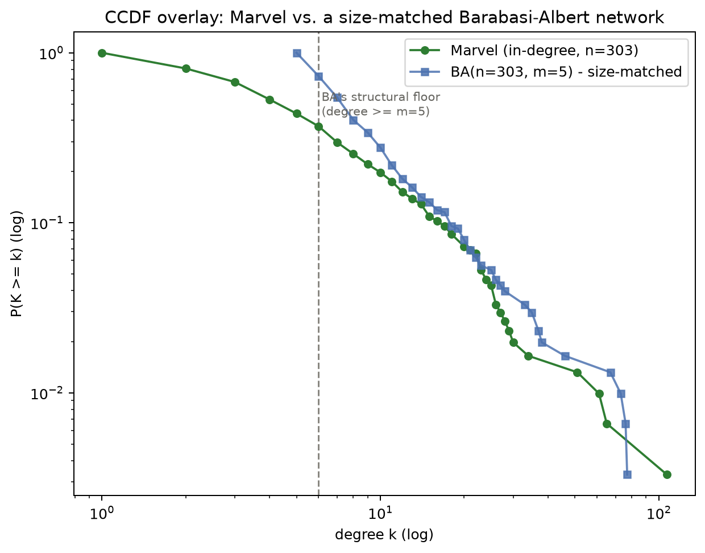

Interactive Network Explorer
303 character names is too many to show all at once without them piling on top of each other, so only the best-connected hubs are labeled by default. Hover or click any node to reveal its name (and its neighborhood on click), or zoom in to reveal labels more broadly. It opens arranged into the Marvel wordmark — cycle to a force-directed / grid / circle layout any time.
Loaded graph
Nodes: 0
Edges: 0
Density: 0.000
Exercise 1.6 — The Distribution, as Code
Rebuilding week 1's two explorables in code: reconciling directed vs. undirected edge counts, plotting the real degree distributions, log-binning them correctly, and checking what shape they resemble against synthetic exponential and power-law data. Full working notebook: analysis.ipynb.
1. Directed vs. undirected — reconciling the two edge counts
Loading every node first keeps 17 isolated characters on the graph, giving 303 nodes and 1,784 directed edges. Collapsing reciprocal links into single undirected edges gives 1,434 edges and an average degree ⟨k⟩ ≈ 9.465.
2. In-degree and out-degree distributions
Plotted against k+1, not k — a log axis can't show zero, and 17 characters have no links at all in one or both directions.

| Character | k |
|---|---|
| Spider-Man | 106 |
| Hulk | 64 |
| Wolverine | 60 |
| Doctor Strange | 50 |
| Deadpool | 33 |
| Character | k |
|---|---|
| Betsy Braddock | 28 |
| Cloak and Dagger | 24 |
| Adam Warlock | 22 |
| Venom | 21 |
| She-Hulk | 20 |
3. Log-binning, done correctly for integer degrees
Standard log-spaced bin edges quietly assume degree is continuous — with integers, edges land between values and bins go empty. The fix: width-1 bins up to k+1 = 7, doubling bins after that ([8,16), [16,32), …), each count divided by its bin width, each bin drawn at the geometric mean of its first and last integer.

3b. Random graph, or Barabási–Albert?
The CCDF above stays nonzero all the way out to k = 107
(Spider-Man) — a random graph this size can't do that; a same-size
G(n,m) random graph tops out around max degree 20. To test the
alternative, a Barabási–Albert network was generated at Marvel's own size
(n = 303, not 5,000 — a bigger BA network gets an unfairly longer tail
purely from having more nodes) with m = 5, chosen to match
Marvel's edge density (1,434 / 303 ≈ 4.73).

This also means m can't be tuned to fix both ends at once: dropping to m = 1 lowers the floor to 1, but starves the network of edges (302 total vs. Marvel's 1,434), so the tail collapses instead (max degree 49 vs. 77 at m = 5) and BA now undershoots Marvel everywhere. The one comparison that is fair is the tail past k ≈ 10, where BA has no more structural constraints — there, both curves decay gradually and stay nonzero out into the tens, unlike a random graph's CCDF, which is already flat near zero by k ≈ 20–30.
4. Exponential vs. power law — and where the real data sits
10,000 samples each from an exponential (scale 10) and a power law (α = 2.5, xmin = 1), viewed under all four axis-scale combinations.

Now the real in-degree distribution joins the same four panels: